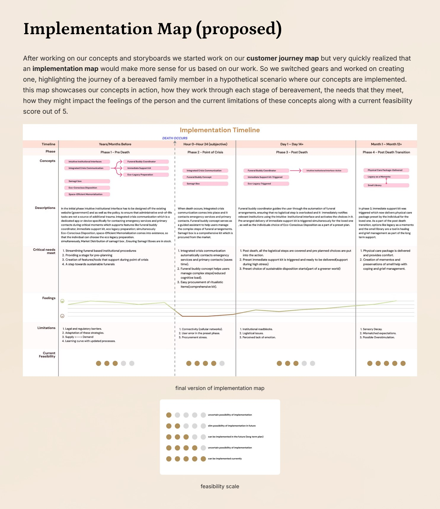
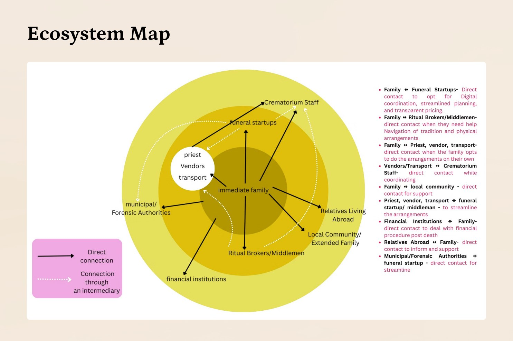
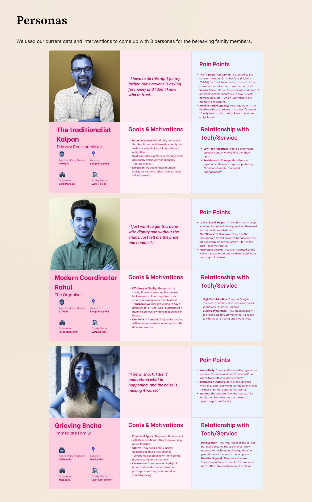
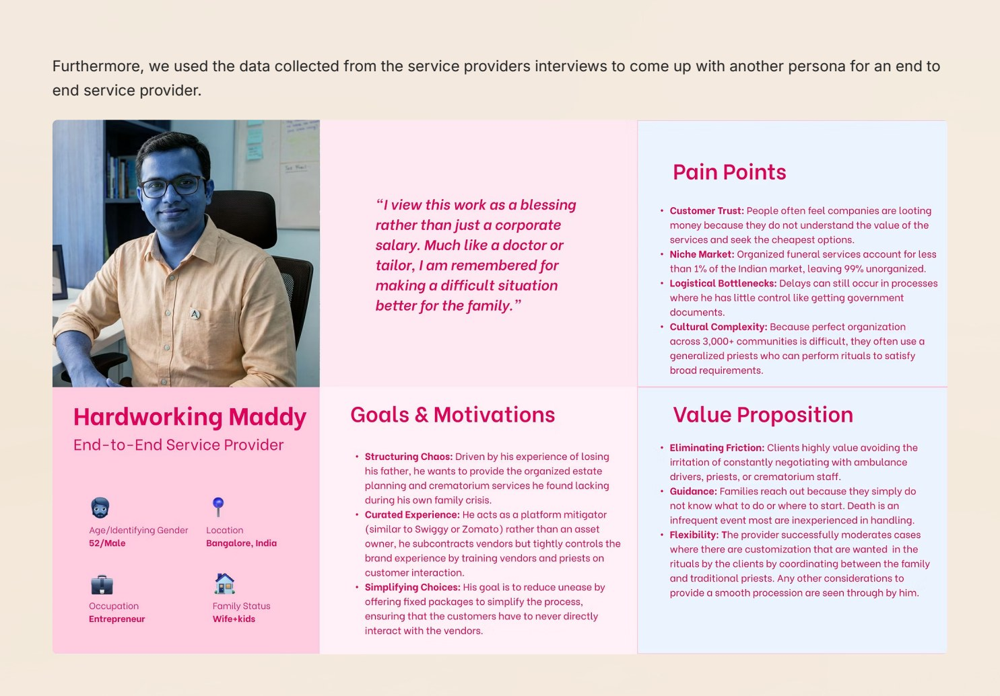
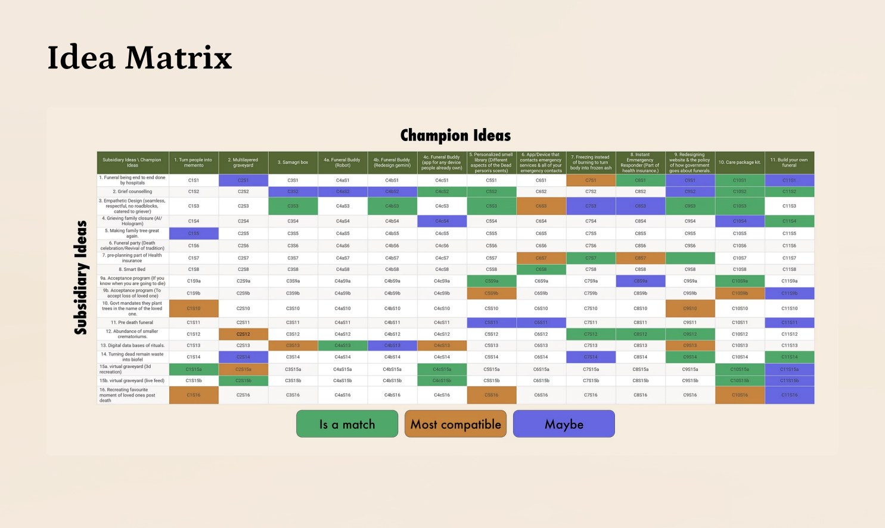
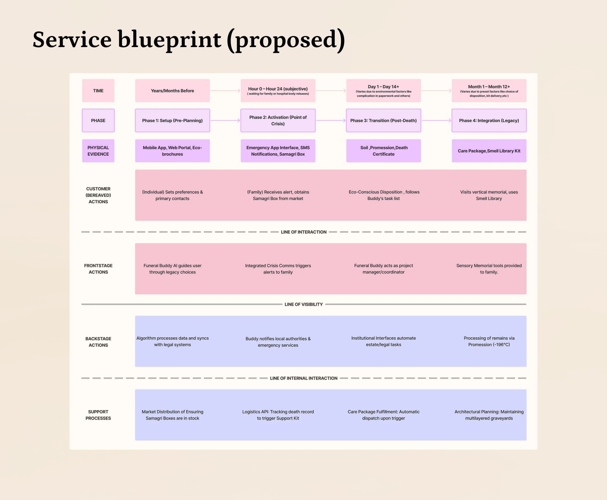

The Urban Crisis: Demographics & The Unorganized Sector
Every year, approximately 8.66 million deaths occur in urban India. Historically, bereavement was buffered by tightly knit joint-family structures and localized community networks that collectively absorbed the immense administrative, ritual, and logistical demands of death care.
Over the past three decades, rapid metropolitan migration, high-density apartment living, and the fragmentation of extended families into nuclear households have severed these traditional safety nets. When a sudden death occurs today in cities like Bengaluru, Mumbai, or Delhi, a small, isolated family unit is abruptly thrust into an unorganized, unregulated, and opaque death care industry.
Within the critical "Golden Hour" of grief,the first three to six hours following a loved one's passing,bereaved family members are forced to manage over 50 frantic phone calls. They must coordinate mortuary transport, negotiate with unregulated hearse drivers, procure dozens of obscure ritual ingredients (samagri), secure medical death declarations, navigate municipal crematorium queues, and fend off predatory bribery schemes.
Despite the immense scale of urban mortality, organized, dignified end-to-end death care services currently capture under 1% of the Indian market. The vast majority of families remain at the mercy of informal middlemen, exploitative touts, and bureaucratic opacity during their most emotionally fragile moments.
Multi-Method Research: Literature, Surveys & Crematorium Ethnography
Investigating end-of-life care demands extreme ethical sensitivity and methodological rigor. The project combined deep academic literature synthesis with primary quantitative surveys, in-depth family interviews, and direct on-site field observation:
- Secondary Research: Analysis of Civil Registration System (CRS) and National Crime Records Bureau (NCRB) mortality data, alongside 15 peer-reviewed academic papers spanning thanatology, vertical cemetery architecture, eco-cremation technologies, and digital mourning protocols.
- Quantitative Survey: 35 detailed survey responses assessing pain points, decision-making dynamics, and cost transparency across urban demographics.
- Qualitative In-Depth Interviews: Semi-structured interviews with 7 recently bereaved families, tracing emotional timelines and procedural breakdowns.
- On-Site Field Observation: Immersive ethnographic field study conducted at Hebbal Crematorium (Bengaluru), observing real-time furnace queue management, tipping dynamics, and ritual broker behaviors.
- Expert & Founder Interviews: Deep-dive interviews with founders of emerging end-to-end funeral startup services to understand unit economics and operational constraints.

Key Empirical Findings
- Predatory Bribery & Tipping: Unofficial tipping and cash demands ranging from ₹1,000 to ₹3,000 at municipal crematorium gates represent the single most distressing friction point for grieving families.
- Patriarchal Decision Hierarchy: In over 80% of surveyed households, the eldest surviving male assumes public decision-making authority over rituals and budgets, while younger, digitally fluent members manage operational logistics.
- Resistance to Corporate Coldness: Bereaved families vehemently reject cold, corporate "Uber-for-funerals" branding. They seek procedural relief without sacrificing sacred tradition, personal privacy, or autonomy.
"Families do not want a cold, disruptive corporate service; they need an invisible 'Logistical Buffer' that absorbs operational friction while preserving traditional dignity and autonomy." Core Service Insight
Persona Architecture & Root Cause Analysis (RCA)
Using Meta-Matrix coding, qualitative data was synthesized into four interconnected persona archetypes, mapping how distinct family roles collide during a crisis:


Secondary personas included Sneha (The Grieving Relative), who requires quiet, non-commercial emotional space to mourn, and Maddy (The Service Provider / Ground Operator), who struggles with operational dispatch, vehicle availability, and lack of dignified professional recognition.
Ideation & The Champion Idea Matrix
To break beyond conventional funeral home paradigms, the team executed structured divergent brainstorming sessions utilizing Crazy 8s, Bizarro analogies, and fantasy extremes. Over 100 raw concepts were generated and clustered into an Idea Matrix, cross-referencing 11 Champion Ideas with 16 Subsidiary Concepts across five operational pillars:
| Ideation Pillar | Champion Concept | Subsidiary Mechanics | Strategic Role |
|---|---|---|---|
| 1. Administrative Automation | Municipal Portal Auto-Sync | Digital Form 4A filing, automated SMS death certificate dispatch | Eliminates corrupt municipal back-office delays |
| 2. Crisis Coordination | "Funeral Buddy" AI Coordinator | Single-thread WhatsApp assistant, vendor routing, expense ledger | Absorbs the 50+ frantic crisis phone calls |
| 3. Tangible Ritual Supplies | Standardized Samagri Box | Pre-packed authentic ritual kit delivered within 45 mins | Removes price gouging at local apothecary stalls |
| 4. Ecological Disposition | Promession / Liquid Nitrogen Freeze-Drying | Sub-zero cryogenic disintegration (-196°C) & organic composting | Eco-friendly alternative to timber shortage & gas crematoria |
| 5. Sensory Legacy | The Smell Library | Olfactory preservation of personal scent notes and voice memory | Provides tactile, long-term mourning anchors |

The Honest Failure: Why Direct B2C Apps Failed
The team’s initial concept (Iteration 1) was a direct-to-consumer mobile application where users could book funeral packages, hearse vans, and priest services on-demand. However, critique and user testing swiftly demonstrated that this approach was fundamentally flawed.
Why Direct B2C Apps Failed: During active mourning, opening an app store, creating an account, and choosing between tiered "silver/gold funeral packages" felt repulsive and emotionally callous to bereaved families. Furthermore, no one downloads a funeral app in advance. A standalone app created severe user friction at the exact moment when cognitive capacity is at its lowest.
The team executed a decisive pivot: Shift from an overt consumer app to an invisible institutional backend. Instead of expecting families to discover a startup, the service hooks directly into hospital discharge portals, doctor certifications, and municipal distress lines, activating assistance automatically without commercial noise.
The 4-Phase System Ecosystem
The finalized framework restructures end-of-life care into a continuum spanning four distinct temporal phases:
Phase 1: Pre-Death Setup & Dignified Planning
An intuitive institutional legacy portal where individuals and elders can document medical directives, organ donation preferences, financial asset access, and ecological disposition choices (such as Promession or tree memorials) long before a crisis occurs, removing ambiguity for surviving kin.
Phase 2: Point of Crisis Activation ("The Golden Hour")
Upon a hospital death declaration or doctor's digital sign-off, the system initiates the "Funeral Buddy" coordination protocol. Operating over familiar channels (WhatsApp and dedicated audio concierge), Funeral Buddy coordinates immediate hearse dispatch, handles crematorium slot scheduling, and routes a standardized Samagri Box (containing precisely measured camphor, earthen pots, sacred threads, and cloth) directly to the residence within 45 minutes.
Phase 3: Post-Death Transition & Administrative Closure
While the physical disposition takes place using modern Promession (liquid nitrogen processing at -196°C that yields organic remains within 2 hours without timber smoke), the backstage system automatically submits Form 4A to municipal health portals, tracking death certificate issuance without requiring family members to stand in government queues.
Phase 4: Legacy Integration & Long-Term Mourning
Two weeks post-funeral, when external visitors depart and isolation sets in, the family receives a physical memory package. Incorporating The Smell Library, personal sensory artifacts (such as familiar scents and curated voice memories) are preserved to provide lasting emotional grounding.

Evaluation, Limitations & Documentation Gaps
The service design framework was validated through expert design reviews, academic studio critiques, and cross-referenced against human-computer interaction (HCI) thanatotechnology frameworks (Hassenzahl et al., 2012; Massimi & Baecker, 2010).
- Natural Deaths Only: The current system model exclusively addresses anticipated or natural domestic/hospital deaths. Unnatural deaths (requiring medico-legal post-mortems and police intervention) introduce complex legal constraints not yet mapped in this model.
- Regional & Sub-Caste Ritual Variations: India encompasses thousands of hyper-localized religious rituals, sub-castes, and community variations. Standardizing the Samagri Box requires localized modular curation.
- Empirical Live App UI Trials: [LIVE USER TESTING OF APP UI NOT DOCUMENTED] High-fidelity individual screens for the Funeral Buddy digital UI were not fully developed in the academic studio file (represented as system flows and storyboards).
Future Implementation Roadmap
Future phases propose pilot testing the Funeral Buddy concierge within a closed partner hospital network in Bengaluru, creating localized regional samagri supplier partnerships, and developing secure digital asset management protocols.
Retrospective & Product Management Signals
This project illustrates advanced service design maturity in a highly stigmatized, emotionally charged problem space:
- Research Rigor in Taboo Domains: Executed respectful, empirical field ethnography and quantitative research in an arena often avoided by designers.
- Ecosystem & Multi-Stakeholder Alignment: Mapped complex touchpoints between public municipalities, hospital administrations, informal laborers, and grieving families.
- Strategic Feasibility Assessment: Built realistic implementation scoring models rather than idealistic, unbuildable concepts.